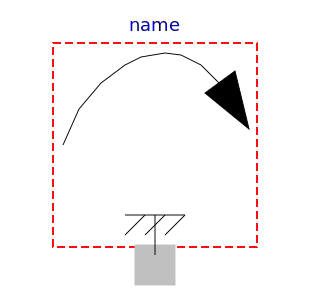

.
ObsoleteModelica3
.
Mechanics
.
Rotational
.
Interfaces
.
PartialSpeedDependentTorque
Information
Partial model of torque dependent on speed that accelerates the flange.
Generated at 2015-08-04T08:51:11Z by
OpenModelica
OpenModelica 1.9.3~dev-547-g0ef9219